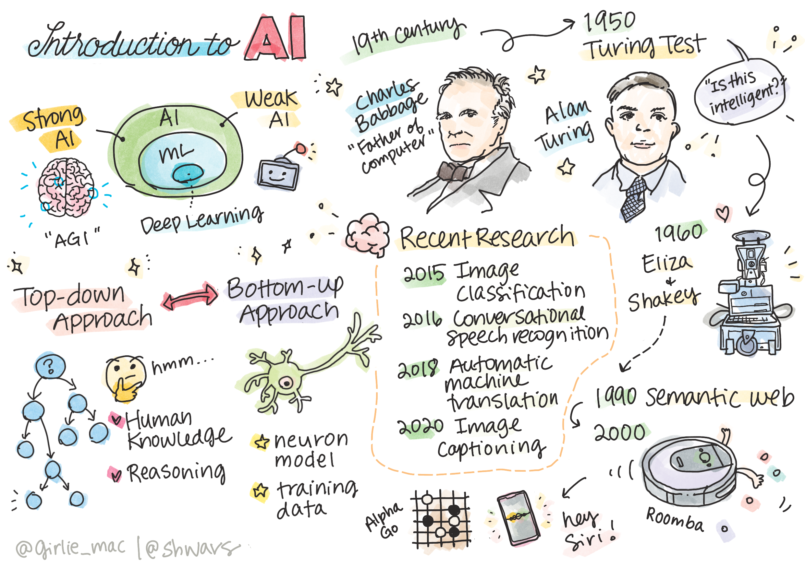
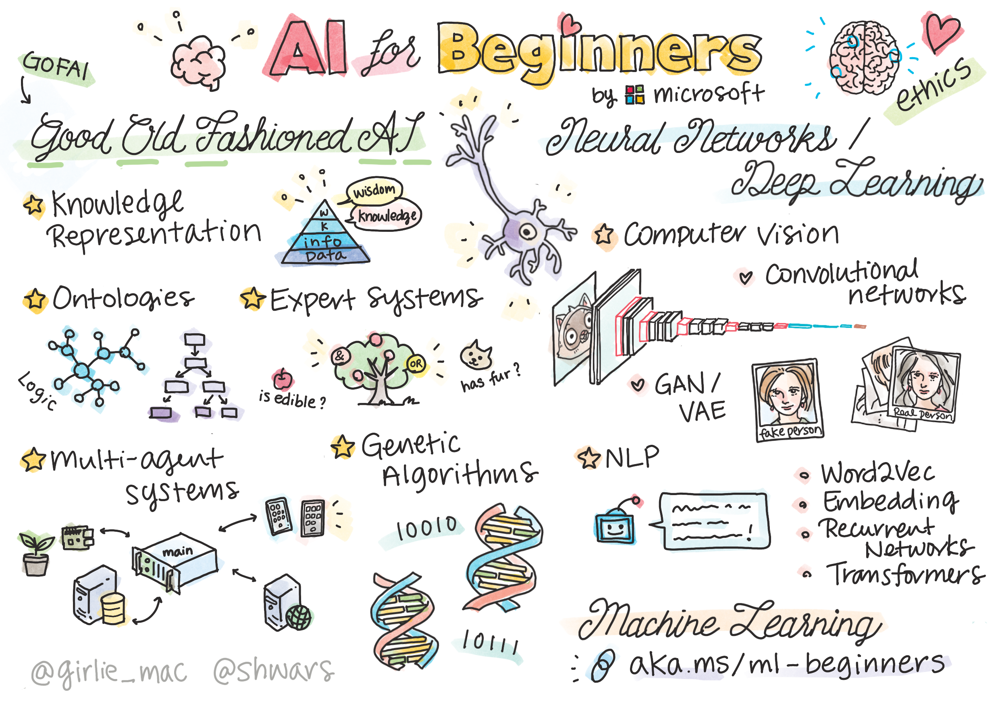
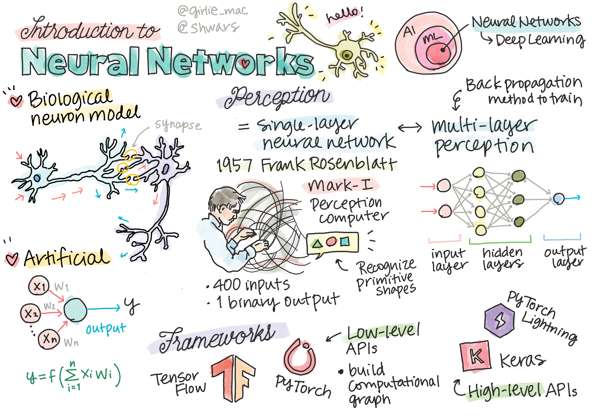

阶段 0 · 总纲：思想转变与 AI 原理认知
转型的前提是人的转变。先转变思想、拥抱 AI，再懂 AI 的基本原理——这是后续所有阶段的地基。
AI 能提效、能大幅扩展人的能力边界，但 AI 不是万能的——最终依赖使用人的能力边界。所以转型的第一步不是上工具，而是转变思想 + 懂原理：先拥抱 AI，再理解它的原理，才能顺畅交互、精准下达指令。人 + AI，人是根本。
- 🎯 做什么：转变思想 + 懂 AI 原理——先拥抱 AI，再理解原理，才能精准交互
- 📦 产出：全员认知对齐（无强制文档，建议各角色先读自己手册的「角色定位」）
- 📖 原理参考：《Transformer 底层原理》 / 《大模型完整历史线》
- 👥 角色手册：开发 / 测试 / 组长 / 产品（先读各自的「角色定位」）
1. 为什么：AI 冲击与人的能力边界
这不是"锦上添花"，而是"不转就出局"。传统软件巨头正被 AI 直接冲击（Salesforce、ServiceNow 等因 AI 颠覆其模式而估值承压）。对研发团队，AI 是重写生产关系的变量——先动的人用同样人数产出 2 倍代码。
但关键认知是：AI 扩展的是"会用 AI 的人"的能力边界。一个懂业务、懂原理、会精准下达指令的人，配上 AI 能放大 10 倍；一个不懂的人，AI 产出再多也用不起来、用不对。人的能力边界，决定了 AI 产出的上限。

2. 转变思想：拥抱 AI（落地步骤）
思想转变不能靠口号，要落到具体行为。研发序列全员的行动准则：
- 解放思想：主动思考"这个任务 AI 能怎么做"，而不是默认自己手写。
- 把重复交给 AI：CRUD、模板代码、文档、测试用例、格式化——凡是重复的，先想 AI。
- 把 AI 当协作者：它是"不知疲倦但会犯错的资深实习生"——委派任务，但审查验证它的产出。
- 接受新分工：人的价值从"写代码"转向"定义问题、设计架构、审查验证、沉淀知识"。
3. 懂原理：才能精准交互（AI 原理速通）
不懂原理就下达指令，等于瞎指挥。理解这 5 条原理，交互效率天差地别：

3.0 先搞懂：AI 到底是什么
在讲"大模型怎么运作"前，先花 2 分钟搞清楚 AI 的本质。
- 定义：AI = 让计算机做"人擅长但无法显式编程"的事（如看照片判断年龄——我们自己也不知道大脑怎么算的）。
- 弱 AI vs 强 AI（AGI）：当前所有 AI（包括 ChatGPT/Claude/GPT-5）都是弱 AI——擅长特定任务但无真正理解/意识。强 AI（AGI）目前只是理论概念。所以"AI 不是万能的"不是口号，是事实。
- 两大流派：① Top-down 符号推理（GOFAI，用规则模拟推理——已被神经网络取代）；② Bottom-up 神经网络（模拟大脑结构，从数据学习——当前主流）。大模型属于后者。
- 图灵测试：如果人分不清对话对面是人还是机器，就算"智能"。但"通过图灵测试"不等于"有智能"——可能是巧妙的模仿。
3.1 大模型本质：预测下一个 token
大模型的底层就是根据上文预测下一个 token（词元）。它不是"理解"了你的代码，而是基于海量模式生成最可能的续写。这解释了：为什么它会"一本正经地胡说"（幻觉）——因为生成的是"看起来对"的，不是"验证过对"的。所以必须验证。
大模型本质上是神经网络。下面这张手绘图把"生物神经元 → 人工神经元 → 感知机 → 多层网络/反向传播 → 框架"这条线一次画清，是理解大模型底层结构最快的入口：

📖 Transformer 底层原理报告 | 🕓 大模型完整历史线报告 （深入选读）
🎓 微软 AI-For-Beginners（中文版，12周24课完整 AI 基础课，MIT 开源）→（想系统学 AI 基础：感知机→CNN→NLP→Transformer，含 PyTorch/TensorFlow 代码实践）
🎬 视频学习：一小时从函数到 Transformer
七个短视频，从"函数 → 神经网络 → CNN/RNN → Transformer → 大模型全貌"完整搭建直觉：
01 从函数到神经网络 · 02 计算神经网络的参数 · 03 调教神经网络的方法 · 04 从矩阵到 CNN · 05 从词嵌入到 RNN · 06 简单而强大的 Transformer · 07 速览大模型 100 词
🖥️ Transformer 交互式可视化模拟 →（浏览器里实时调参，看注意力怎么算）
3.2 上下文窗口：1M 是一切用法的约束原点
Claude 的上下文已达 1M tokens（百万级），虽大但仍会填满——大代码库、长会话、一堆 MCP 工具定义都会撑爆它，填满后性能下降。本教程几乎所有最佳实践（精简 CLAUDE.md、按需加载 Skill、干净会话、CLI 优于 MCP）都在围绕这一个约束。上下文仍是稀缺资源，每一段常驻内容都要挣它的一席之地。
3.3 Agent = 大模型 + 工具
大模型只能输出文字，无法感知/改变外界（不能读文件、调接口、跑命令）。Agent = 把大模型和一堆工具组装起来，让它能感知和改变环境。模型"先思考再行动"的奥秘在系统提示词（定义何时调何工具），而非模型训练。
3.4 REACT 模式：Agent 怎么循环跑
最广泛的 Agent 运行模式——Thought（思考）→ Action（调工具）→ Observation（看结果）→ 循环 → Final Answer：
# REACT 循环（伪代码）
while not 完成:
thought = 模型思考("基于当前观察，下一步该做什么")
action = 模型选择工具 + 参数
observation = 执行工具，拿到结果
把 (thought, action, observation) 加回上下文
return 最终答案3.5 精准下达指令：给上下文、明目标
原理懂了，交互方式就变了。差的指令 vs 好的指令：
- ❌ "帮我优化一下这个功能"（无上下文、无目标、无验证标准）
- ✅ "这个接口慢 SQL 18秒（附执行计划），目标降到 1 秒内。先分析瓶颈，给我方案，我确认后再改。改完用 EXPLAIN 验证。"（给现状、明目标、定流程、要验证）
4. 角色视角：每个人怎么转变
定调"拥抱 AI"、带头用、推动全员培训、把 AI 掌握度纳入导向、组织规范沉淀。你的态度决定团队转变速度。
主动学原理、上手 Claude Code、把重复交 AI、专注架构与审查。这是你能力跃迁的最大杠杆。
找自己的 AI 切入点：PM 用 Codex 做原型、测试用录制+AI 生成用例、运维用 AI 分析性能。AI 不只是开发的事。
5. 真实案例：团队的转变过程
某企业学习平台研发中心（80+ 人）启动 AI 转型时，把"解放思想，拥抱 AI"写进全员行动准则，并配套：
- 动员与培训：AI 转型动员令 + Claude Code 安装使用培训 + AI 原理认知普及。
- 岗位重构方向：打破前后端界限，推行"全栈工程师"，未来演进为产品经理/业务架构师/测试架构师/运营架构师四角色。
- 知识沉淀：建立集中 AI 智能体作为团队知识中心，成员可提问、分享经验，每日生成日报复盘——让个体经验沉淀为组织资产。
结果：3 个月内人均产出显著提升、AI 代码占比大幅提高（具体数据见 阶段 5 度量）——但前提是全员先过了"思想转变 + 懂原理"这一关。
6. 常见坑 + 落地清单
- 全员已知晓并认同"AI 扩展人不万能、人是根本"的核心理念
- Leader 已公开定调"拥抱 AI"并带头使用
- 全员理解 5 条原理（token 预测 / 上下文 1M / Agent / REACT / 精准指令）
- 每个人能区分"差指令"和"好指令"，并能写出带上下文+目标+验证的好指令
- 已建立"信任但验证"的协作习惯（AI 产出必过人工审查）
下一阶段：思想就绪后，进入阶段1 战略启动——把"拥抱 AI"变成有目标、有路线图、有组织的正式转型。